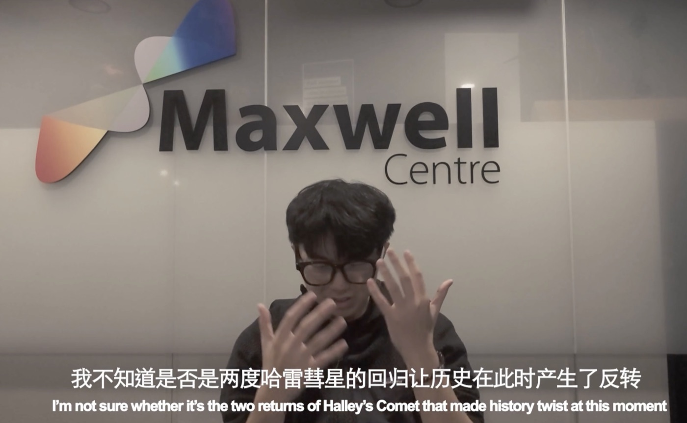

As Fables Go By
洋务运动
从通信历史的独立研究出发，经过英国及欧洲多地拍摄、剪辑与后期，完成一部24分钟影像。围绕同一研究，继续展开视觉开发与跨媒介实验。

项目课题01 / QUESTION
如何把历史资料、实地经验与个人叙事组织为一部完整影像，而不让研究停留在文字层面？项目以通信技术与模拟媒介为线索，将不同年代赴英学习的经历并置，让地点、声音和影像承担叙事。
展开艺术与研究背景
1876年的洋务学子赴英学习电报技术，与2025年的当代艺术留学经历在作品中交织。南苏格兰肯湖、帕顿教堂与大北无线电装置等研究线索，把个人经验带入更长的通信史。作品属于“数字媒介本体”系列的通信分章。
我的工作02 / ROLE
- 01
研究与叙事
独立推进资料研究与实地调查，将历史线索转化为影像结构和拍摄方向。
- 02
拍摄与素材
在英国及欧洲多地拍摄，积累现场图像与影像素材，建立项目的视觉语言。
- 03
后期与整合
推进剪辑、后期与视觉开发，将长期研究和多地素材组织为24分钟完整影像。
工具与实验03 / PROCESS
项目将摄影、影像制作与技术实验放在同一研究过程中。相关实践涉及135胶片、RGB三色投影，以及TouchDesigner、WebGL、Unreal Engine点云与Arduino装置。
这些技术用于探索图像、信号与空间的关系；我更关注它们如何服务叙事与视觉表达，并通过原型验证媒介想法。

完成的作品04 / OUTPUT
最终完成24分钟影像，并形成从独立研究、跨地区拍摄到剪辑与视觉开发的完整项目经验。这个项目体现了我推进复杂、长期视觉项目，以及在不同媒介之间组织内容的能力。
AS FABLES GO BY / FILM
影片由Vimeo提供。若无法加载，可通过下方链接打开。